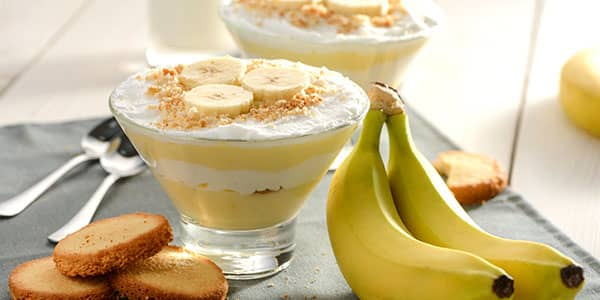

Банановий пудинг із морозивом
Опис страви
Шматочки бананів і печива, вкриті ніжним заварним кремом та прикрашені збитими вершками чи кулькою морозива, — це знаменитий банановий пудинг.
Рецепт цього оригінального десерту вигадали в південних штатах Америки лише століття тому. Однак він настільки полюбився публіці, що сьогодні його подають у кафе й ресторанах по всьому світу.
Зазвичай до складу бананового пудингу додають вафлі, пісочне печиво або савоярді. Морозиво найкраще обрати класичне біле або крем-брюле. Довершують композицію листочками м’яти, безе чи подрібненими горіхами.
Простий рецепт бананового пудингу з морозивом
Викладайте цей десерт шарами, як англійський трайфл, або просто змішайте всі інгредієнти в одній великій мисці.
За декілька годин, коли печиво вбере заварний крем та морозиво, а ваніль і банани віддадуть свій ніжний аромат, у вас вийде смачний десерт, яким із задоволенням поласує вся родина.
.png) 20 хвилин
Легко
Вечеря
20 хвилин
Легко
Вечеря

Інгредієнти
- Банани 2 шт.
- Молоко ТМ «Рудь» 320 мл
- Борошно пшеничне 3 ст. л.
- Яйця 2 шт.
- Печиво пісочне 70 г
- Вершкове масло «Вологодське», 82,5 % 1,5 ч. л.
- Цукор 80 г
- Ванільний цукор 2 г
- «100 % морозиво» ТМ «Рудь» 100 г
приготування
1. У невелику каструлю наливаємо молоко та насипаємо просіяне через сито борошно.
2. За допомогою міксера збиваємо муку та молоко до повного розчинення грудочок.
3. Відділяємо жовтки від білків. Поміщаємо жовтки в окрему миску, додаємо звичайний та ванільний цукор. Перемішуємо.
4. Перекладаємо цукрово-яєчну масу до суміші борошна та молока. Збиваємо до однорідної консистенції.
5. Ставимо каструлю на слабкий вогонь та нагріваємо суміш 2–3 хвилини, постійно помішуючи.
6. Коли маса загусне, знімаємо каструлю з вогню. До суміші додаємо вершкове масло та перемішуємо. Чекаємо, поки суміш охолоне.
7. Один банан ріжемо на шматочки та перекладаємо в чашу блендера. Викладаємо частину пудингу з каструлі та подрібнюємо інгредієнти протягом кількох хвилин — до кремової консистенції.
8. Банан, який залишився, нарізаємо кружальцями, печиво ламаємо невеличкими шматочками.
9. На дно креманок викладаємо банани та печиво, зверху — шар пудингу та кульку морозива. Повторюємо послідовність до повного наповнення склянок. Залишаємо пудинг у холодильнику на кілька годин.